Manual de usuario de Bullet POS
Todo lo que necesitas para vender, atender mesas, cuadrar la caja y administrar tu negocio. Usa el menú o el buscador de arriba, y toca cualquier imagen para verla en grande.
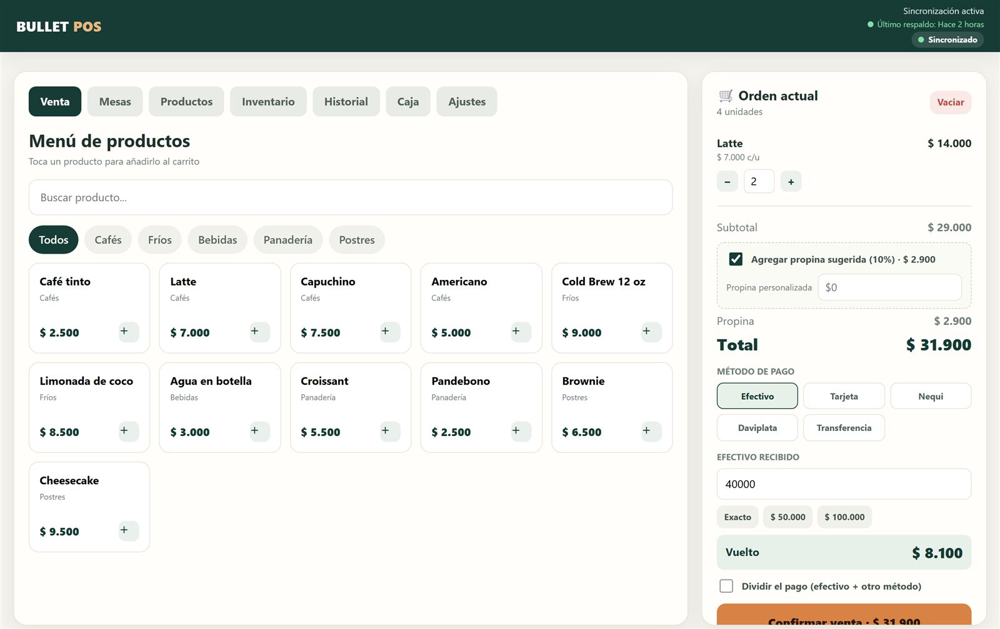
Soporte: thebulletes@gmail.com, o desde la app: Ajustes → Ayuda y app → Reportar un problema.
1 Conceptos básicos
Lo que conviene entender antes de empezar.
| Concepto | Qué es |
|---|---|
| PC Main | El equipo del administrador, normalmente la caja principal. Administra productos, precios, caja, personal, equipos y ajustes. Puede haber hasta 2. |
| Equipo secundario | Celular o tablet del personal. Vende y atiende mesas según los permisos que le dé el PC Main. No ve la pestaña Ajustes. |
| PIN | Número de 4 a 6 dígitos de cada persona de administración para entrar al PC Main. Los equipos de los meseros no usan PIN. |
| Contraseña administrativa | Clave del negocio para lo delicado: cerrar caja, anular, autorizar equipos, cambiar la política. Solo la conoce el dueño. |
| Licencia | Permite vender mientras está vigente. Si vence, puedes consultar el historial, sacar respaldos y Excel, y cerrar caja, pero no hacer ventas nuevas. |
2 Primeros pasos
Instalar la app, activar el equipo y dejar el negocio listo.
2.1 Instalar y activar el equipo
- Abre el link de activación que te envió el proveedor. En iPhone, ábrelo en Safari.
- Acepta Activar este equipo para…
- Instala la app: en PC o Android pulsa Instalar Bullet POS; en iPhone sigue los pasos de Compartir ⬆ → «Agregar a inicio». «Usar sin instalar» aparece después de unos segundos y no se recomienda.
- Abre Bullet POS desde el ícono. El equipo espera hasta que el PC Main lo autorice.
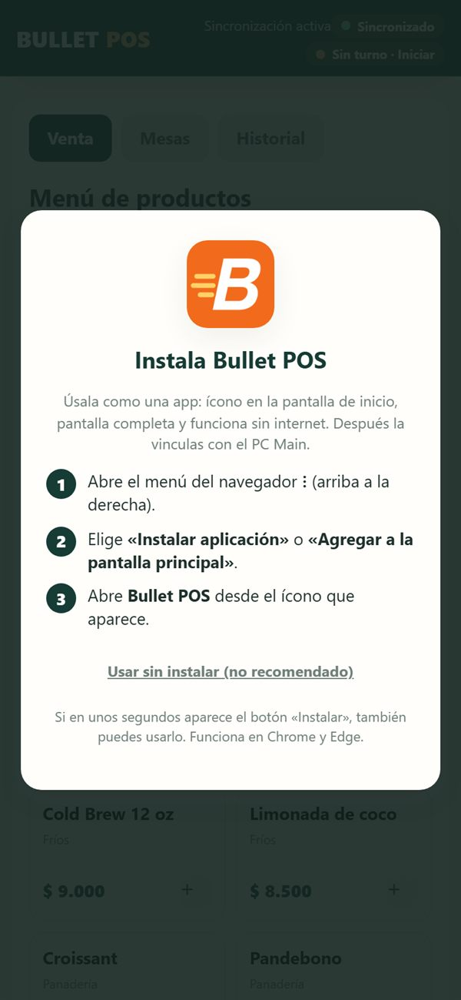
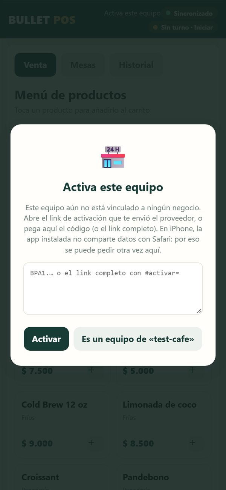
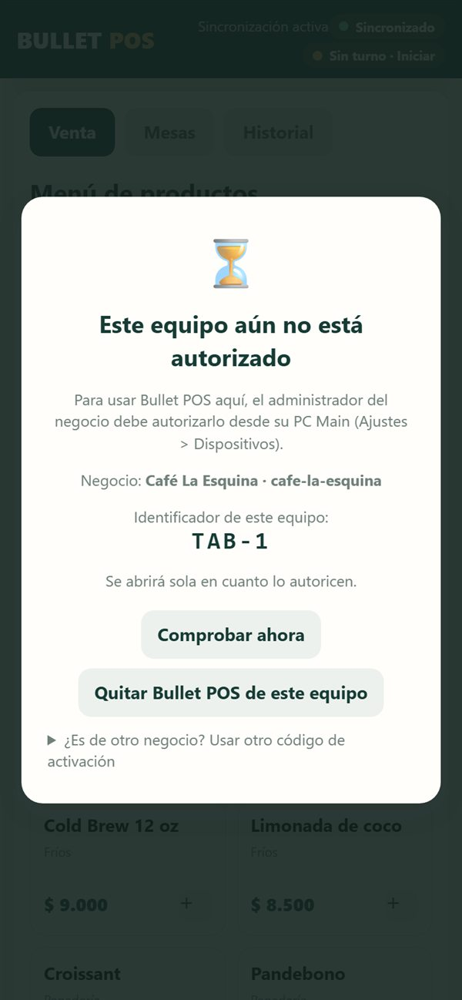
2.2 El primer PC Main
- Con el equipo autorizado aparece Empezar desde cero (o Restaurar un respaldo si vienes de otro equipo).
- Ajustes → Equipos y personal → Configurar este equipo como Main con la contraseña inicial que te dio el proveedor (es solo de tu negocio; mayúsculas y guiones no importan).
- Crea tu PIN con Crear mi PIN.
- Sigue el asistente: datos del negocio, tu contraseña administrativa (anótala en un lugar seguro), forma de trabajo, productos y caja. ¿Te equivocaste? Vuelve a abrirlo en Ajustes → Ayuda y app → Asistente de configuración: cada paso reemplaza lo anterior (no hace falta borrar nada). Cambiar la forma de trabajo pide la contraseña.
- Mientras no cambies la contraseña inicial, el asistente se abre cada vez y no se puede dejar para después; las acciones protegidas (cerrar caja, anular…) piden cambiarla primero.
2.3 Sumar equipos
- Abre el mismo link de activación en cada celular o tablet e instala la app.
- El equipo nuevo muestra un código de 8 letras. En el PC Main: Ajustes → Equipos y personal → Dispositivos, escribe ese código en «Agregar un dispositivo nuevo», ponle un nombre y pulsa Autorizar dispositivo. (También aparece en la lista como Pendiente, con el mismo código.) Las solicitudes que nadie autoriza se borran solas a las 48 horas.
- Los equipos de los meseros no piden PIN: al iniciar el turno se escribe el nombre de quien atiende.
2.4 Segundo PC Main (opcional)
- Autorízalo como equipo normal.
- En el PC Main: Autorizar segundo Main. Sale un código como SEFQ-FM2Z, que dura 10 minutos.
- En el otro equipo, toca el indicador de sincronización de arriba → Vincular como segundo PC Main, escribe el código y pulsa Vincular.
- Permisos (2.7.0): el primer PC Main es el Main principal (dueño). En Ajustes → Equipos y personal abre Permisos de …, elige qué puede hacer el segundo (o usa Administrador (recomendado)) y pulsa Guardar permisos. Vender, cobrar, mesas y ver el historial siempre están permitidos.
3 La pantalla principal
Pestañas arriba, contenido en el centro y la orden actual a la derecha (abajo en el celular).
| Pestaña | Para qué sirve | Quién la ve |
|---|---|---|
| Venta | Vender en mostrador y cobrar | Todos |
| Mesas | Atender mesas y cobrar cuentas | Todos |
| Productos | Catálogo y precios | PC Main |
| Inventario | Materia prima, recetas y costos | PC Main |
| Historial | Ventas, anulaciones y archivos | Todos (el secundario ve solo las suyas) |
| Caja | Abrir, operar, cerrar y cuadrar la caja; turnos | PC Main |
| Ajustes | Negocio, equipos, personal y seguridad | PC Main |
Indicadores de arriba
- Sincronización: el estado de la conexión. Tócalo para ver el detalle de lo pendiente y de los errores.
- Último respaldo: hace cuánto se hizo el último respaldo; se pone en rojo si hace mucho.
- Turno: quién tiene el turno abierto y desde cuándo. Tócalo para iniciarlo o cerrarlo.
- Avisos del PC Main: solicitudes de cobro, turnos por aprobar y ventas por revisar.
4 PIN y bloqueo del PC Main
El PIN protege solo los PC Main (caja, anulaciones, ajustes y equipos). Los equipos de los meseros no usan PIN.
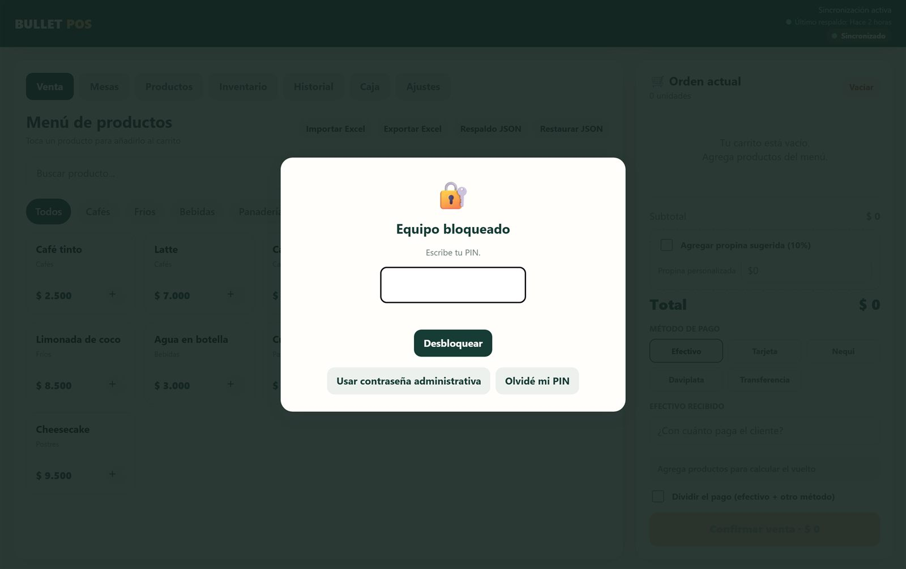
- En el PC Main entra una persona de administración con su PIN, o con Usar contraseña administrativa.
- Tras unos minutos sin uso, el PC Main se bloquea solo.
- Tras 5 PIN equivocados hay que esperar 60 segundos.
- ¿Olvidaste tu PIN? En la pantalla de bloqueo toca Olvidé mi PIN, escribe la contraseña administrativa y crea un PIN nuevo. También se cambia en Personal y PIN → Restablecer PIN.
- Equipos de los meseros: no piden PIN ni se bloquean. Al iniciar el turno, cada persona escribe (o elige) su nombre, y sus pedidos quedan a ese nombre.
5 Turnos
El turno agrupa las ventas de una persona en un equipo, desde que empieza hasta que termina.
Iniciar turno
- Toca el indicador de turno o Iniciar turno.
- Escribe o elige tu nombre y, si quieres, una observación.
- Si el negocio pide aprobación, el botón dice Pedir inicio de turno. El equipo espera al PC Main, y el tiempo del turno cuenta desde que lo aprueba. Necesita internet.
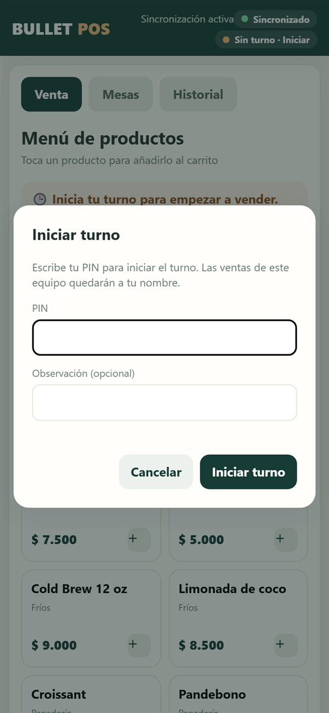


Cerrar turno
- Indicador de turno → Cerrar turno.
- Revisa el resumen, escribe el efectivo que entregas y las observaciones.
- El equipo queda bloqueado con el resumen. Desde ahí: Guardar PDF, Imprimir o iniciar un nuevo turno para la siguiente persona.
En el PC Main
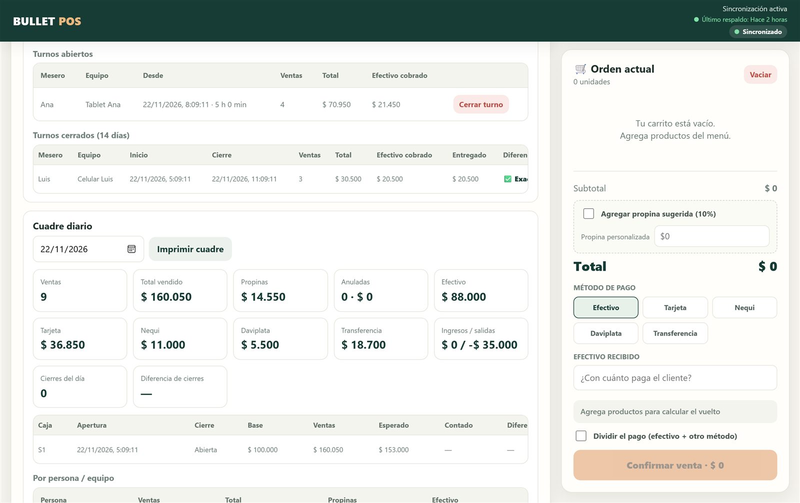
- Aprobar o rechazar los turnos que piden los meseros (aparece un aviso arriba).
- Cerrar un turno administrativamente si el equipo se apagó, se perdió o se quedó sin batería: pide la contraseña y un motivo. También se puede desde el reinicio y al reportar un equipo perdido.
- Ventas que llegan después de un cierre administrativo: aparecen en «Por revisar» para Marcar como revisado.
- Confirmar entrega: registra que recibiste el efectivo del turno.
6 Vender (mostrador)
Agrega productos, elige el pago y confirma.
- Agrega productos tocándolos. Filtra por categoría o usa el buscador.
- Lector de código de barras (opcional): escanea sin el cursor en ningún campo y el producto entra solo.
- Ajusta cantidades con – / + en «Orden actual».
- Propina: marca la sugerida (10 %) o escribe una personalizada.
- Método de pago: Efectivo, Tarjeta, Nequi, Daviplata o Transferencia. En efectivo escribe con cuánto paga, o pulsa Exacto, y la app calcula el vuelto.
- Dividir el pago (efectivo más otro medio): marca la casilla.
- Pulsa Confirmar venta.

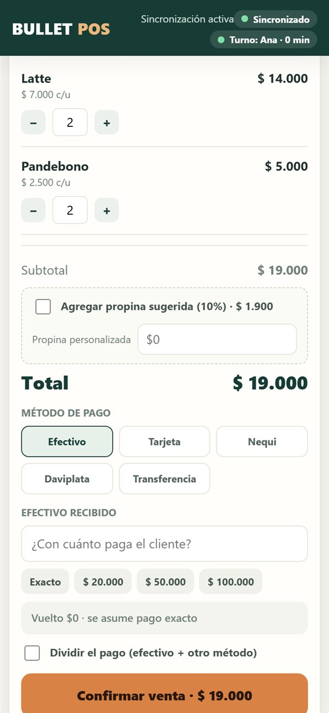
7 Comprobantes
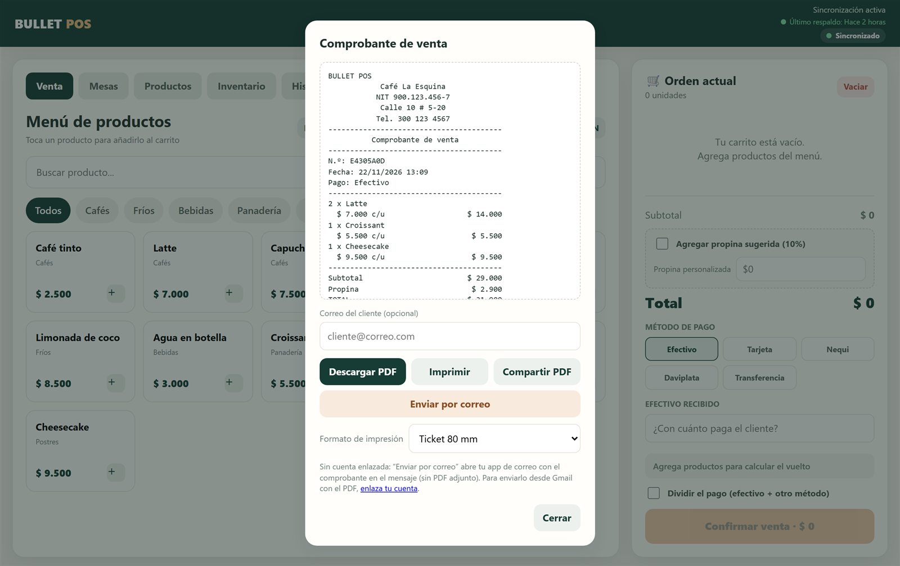
- Imprimir: ticket de 58 mm, 80 mm, hoja carta o A4.
- Compartir PDF: por WhatsApp, correo u otra app.
- Enviar por correo: abre tu app de correo con el comprobante.
- Desde el Historial puedes reimprimir el de cualquier venta.
8 Mesas
Cuentas abiertas que todos los equipos ven al instante.

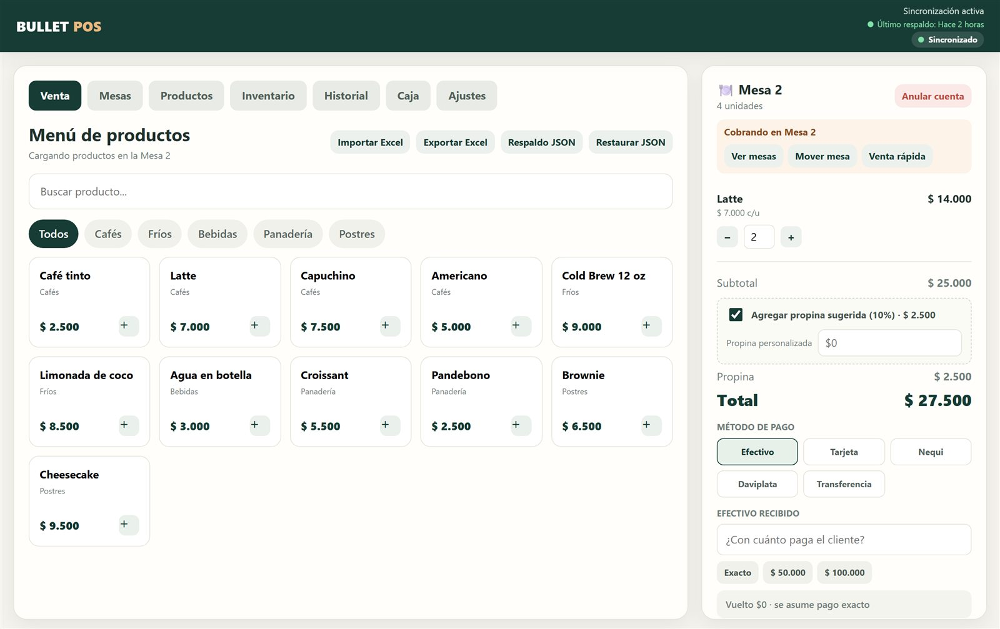
- Toca una mesa libre para abrirla y agrega productos.
- Corrige productos mientras no se haya iniciado el cobro.
- Mover mesa: pasa la cuenta completa a otra mesa.
- Abono parcial: registra pagos parciales.
- Cobrar: la cuenta se congela al iniciar el cobro, y la mesa se libera solo cuando la venta queda registrada. Cancelar cobro si te equivocaste.
- Venta rápida: vuelve a la venta de mostrador.
- Anular cuenta: solo el PC Main, con contraseña y motivo.
9 Solicitudes de cobro
Para equipos sin «Cobro directo», típico del perfil «Negocio con meseros».
- El mesero arma la orden o la mesa y pulsa cobrar. Se envía una solicitud al PC Main, con una nota opcional («paga con billete de 50.000»).
- El PC Main ve Ver solicitudes, la carga y cobra, o la rechaza con un motivo.
- La venta queda a nombre del mesero, cobrada por el PC Main.
10 Caja
Base, ventas por medio de pago, movimientos, arqueos y cierre.

Durante el día
- Abrir caja con la base del día. Sin caja abierta no se vende.
- Movimientos de caja: ingresos y salidas con motivo, con contraseña.
- Arqueo parcial: cuenta el efectivo sin cerrar.
- Corte X: imprime el estado actual sin cerrar.
Cerrar caja
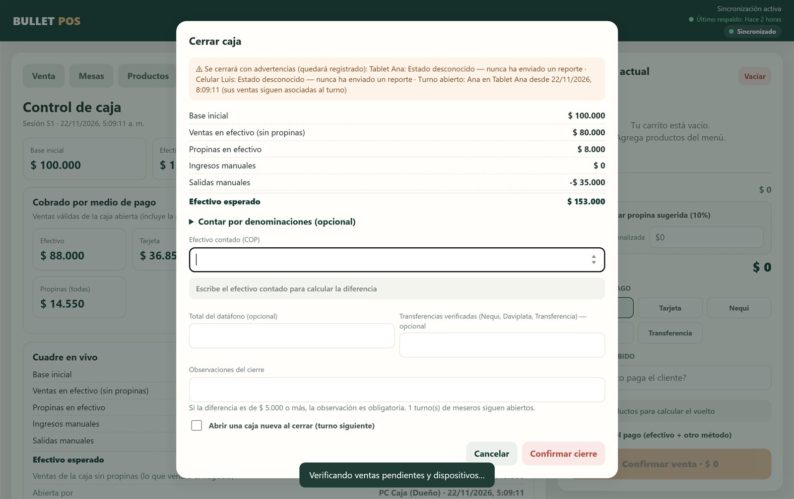

- Cerrar caja (con contraseña).
- Cuenta el efectivo; puedes hacerlo por denominaciones.
- Si aplica, registra el datáfono y las transferencias verificadas.
- Revisa esperado, contado y diferencia; si es grande, escribe una observación.
- Imprimir cierre: incluye base, ventas por medio de pago, propinas, cada movimiento de caja, la diferencia y la firma.
11 Historial de ventas

- Comprobante: reimprimir o compartir.
- Anular (PC Main): con motivo; la venta queda marcada y deja de sumar. Si descontó inventario, se devuelve.
- Corregir pago (PC Main): cambia el medio de pago, con registro.
- Archivar mes, Exportar Excel, Respaldo JSON y Restaurar JSON. Haz un respaldo cada semana. Restaurar JSON (desde la 2.9.5) recupera todo lo que guarda, incluido el inventario (elementos, recetas con sus versiones y movimientos), pero solo en un negocio del mismo tipo: agrega lo que falte y nunca borra ni sobrescribe.
12 Productos
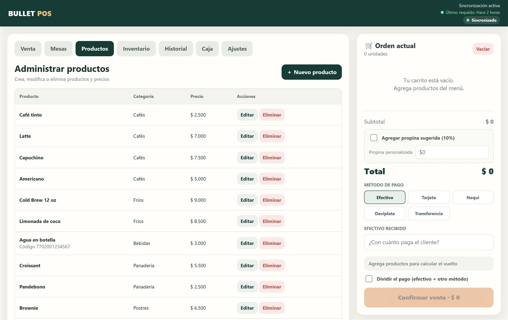

- Nuevo producto: nombre, categoría, precio y, opcionalmente, el código de barras (único).
- Control de inventario (desde la 2.10.0, con Inventario activo): en la misma ficha eliges cómo descuenta cada producto.
- Por unidad: el producto tiene su propio stock. Pones el costo, el stock mínimo, el proveedor, si se compra por caja y el stock inicial (queda como «Inventario inicial»); la ficha muestra el margen (precio − costo, en pesos y %). Después, el stock y el costo promedio se ven en la ficha y cambian solo con compras, mermas, ajustes o conteos.
- Por receta: descuenta los ingredientes de su receta (solo con Recetas y preparaciones).
- Sin control: se vende sin descontar inventario. Si el producto tenía receta, la app lo advierte.
- Importar (Agregar productos, recomendado): descarga la plantilla (Nombre, Categoría, Precio, Costo, Stock inicial, Stock mínimo, Código, Proveedor), llénala y elige el archivo. La vista previa muestra los que se agregan, los duplicados (por nombre o código) y las filas con error; no borra ni reemplaza nada y crea el inventario inicial.
- Reemplazar todo el catálogo (avanzado): la importación de siempre (columnas Producto, Categoria, Precio_COP y Codigo_barras). Antes descarga un respaldo, avisa cuántas recetas y productos por unidad pierden su relación y pide escribir REEMPLAZAR.
- Cada tamaño es un producto aparte; las adiciones van en una categoría «Adiciones».
- Los cambios llegan solos a todos los equipos.
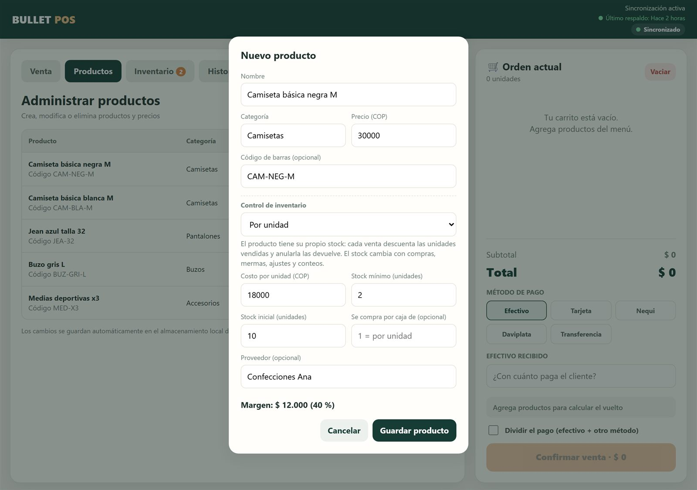
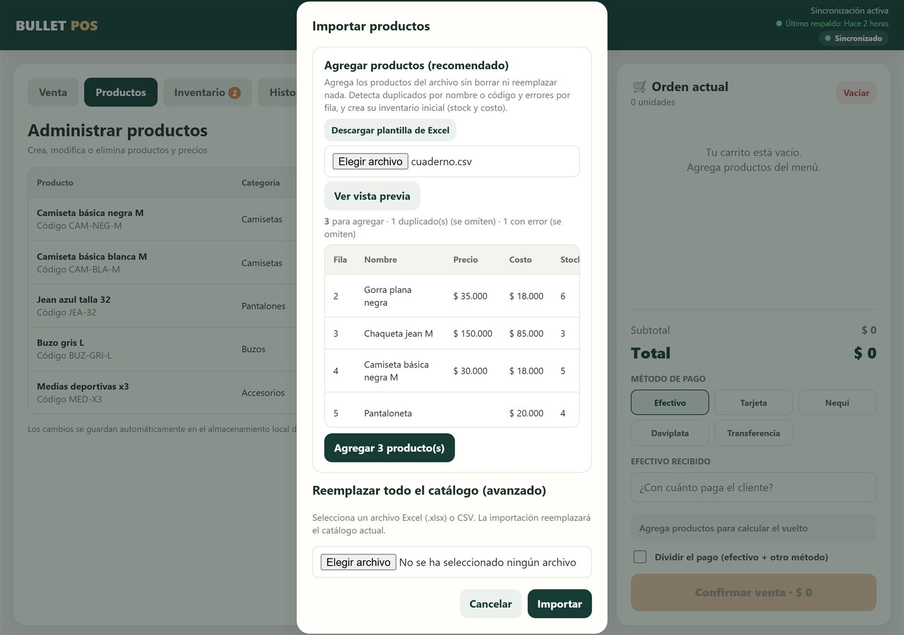
13 Inventario y costos: guía del administrador
Opcional y solo en el PC Main. Cada venta descuenta su receta y te dice cuánto ganas de verdad.
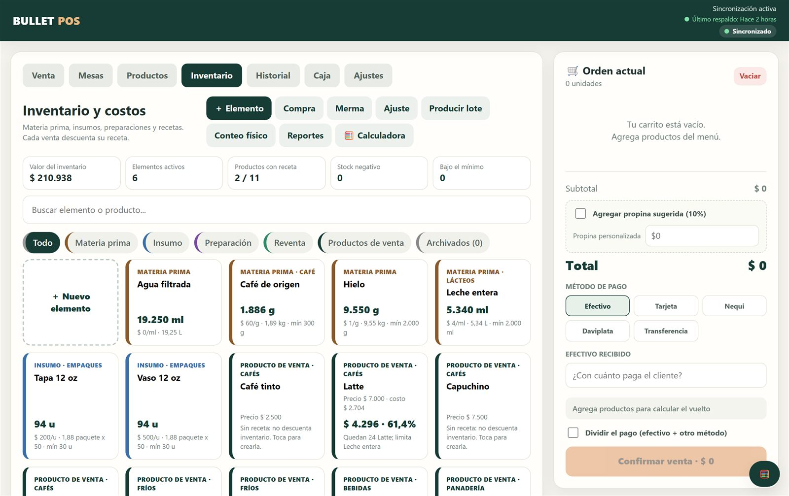
La idea clave
Los elementos tienen stock; los productos de venta tienen receta. Cuando se vende un producto, la app mira su receta y descuenta de cada elemento la cantidad indicada. Todo el inventario funciona con esa regla.
- Compra: entra café, leche, vasos… al stock de cada elemento.
- Producir lote (solo preparaciones): con café y agua se produce cold brew, que entra a su propio stock.
- Receta: cada producto de venta dice qué elementos usa y cuánto (por ejemplo, 150 ml de cold brew por vaso).
- Venta: al cobrar un producto, la app descuenta automáticamente su receta.
- Control: mermas, ajustes y conteos físicos corrigen las diferencias con la realidad.
Los cinco tipos
Antes de crear algo, decide qué tipo es. Es la decisión que más errores evita.
| Tipo | Qué es | Cómo entra al stock | Ejemplos |
|---|---|---|---|
| Materia prima | Ingrediente que se compra | Compra | Café en grano, leche, limón, agua |
| Insumo | Material desechable que se compra | Compra | Vasos, tapas, pitillos, servilletas |
| Preparación | Algo que se prepara aquí con otros elementos | Producir lote | Cold brew, jarabe de panela |
| Reventa | Producto que se compra y se vende igual | Compra | Agua en botella, gaseosa |
| Producto de venta | Lo que se cobra en el POS | No tiene stock: descuenta su receta | Cold Brew 12 oz, Cappuccino |
Las dos unidades de cada elemento
Cada elemento tiene una unidad pequeña, con la que se descuenta (unidad base), y una grande, con la que se compra (unidad de compra).
| Elemento | Unidad base (se descuenta) | Unidad de compra | Equivale a |
|---|---|---|---|
| Café en grano | g | kg · Bolsa | 1000 · 900 (o lo que traiga la bolsa) |
| Leche | ml | L | 1000 |
| Agua | ml | L | 1000 |
| Cold brew | ml | — (se produce) | — |
| Vasos 12 oz | unidad | Paquete | 50 |
| Limón | unidad | Bolsa | 30 |
- Las compras se registran en la unidad grande: «compré 3 kg», y la app suma 3.000 g.
- Las recetas siempre van en la unidad pequeña: «18 g de café», «150 ml de cold brew».
- El campo «Equivale a» nunca puede ser 0: es cuánto trae una unidad de compra, no el precio.
Crear un elemento
Antes de crear uno, búscalo en el buscador por si ya existe. Si escribes un nombre igual o muy parecido a otro (aunque esté archivado), la app te muestra los parecidos y pide confirmar.
- Inventario y costos → ＋ Elemento.
- Nombre: claro y único. Ejemplo: «Leche entera», no «Leche 2».
- Tipo: según la tabla de los cinco tipos.
- Categoría: la misma que usan en el menú (Cafés, Bebidas frías…).
- Unidad base: g, ml o unidad.
- Unidad de compra y Equivale a: por ejemplo «kg» y «1000».
- Costo de compra por unidad de compra: lo que se paga por una unidad grande. Ejemplo: 1 kg de café a $79.000 → escribe 79000. Debajo verás «= $ 79 por g». Si ese costo cambia más de un 50 % respecto al que tenía, la app lo avisa y pide confirmar.
- Stock mínimo: en unidad base. Por debajo de esa cantidad aparece en «Bajo el mínimo».
- Proveedor: opcional.
- Activo marcado → Guardar elemento.
Un elemento nuevo empieza con 0 de stock. Para que tenga existencias hay que registrar una compra.
Registrar compras
Cada vez que llega mercancía, regístrala el mismo día. Si no, el stock queda bajo y las ventas lo dejan en negativo.
- Pulsa Compra: arriba en Inventario, o dentro del elemento.
- Elige el elemento.
- Cantidad en unidad de compra: 3 (kg), 2 (paquetes)…
- Costo total de la factura. La vista previa muestra el costo por unidad base de esa compra («= $ 79 por g»). Si difiere más de un 50 % del costo actual, la app avisa y pide confirmar: casi siempre es una cantidad o una unidad mal elegida (1 g en vez de 1 kg).
- Proveedor y nota (número de factura), si aplica.
- Confirma.
Comprueba: abre el elemento. El Stock actual debe haber subido y la compra debe aparecer en Últimos movimientos.
- Sobre el costo: si compras el mismo café a precios distintos, la app calcula un costo promedio. Así el costo de las recetas se mantiene realista sin que cambies nada.
- Agua de la llave o filtrada: regístrala con costo 0 y haz una compra grande de vez en cuando (por ejemplo, 20 L), para que no quede en negativo.
Preparaciones: producir lote
Una preparación se elabora aquí con otros elementos. Su stock no entra con compras, sino con Producir lote. Ejemplo real: el cold brew.
Configurarla (una sola vez):
| Campo | Valor del ejemplo | Qué significa |
|---|---|---|
| Tipo | Preparación (sub-receta) | Se produce aquí |
| Unidad base | mililitros (ml) | Se descuenta en ml |
| Receta del lote | Café en grano 100 g · Agua 1.000 ml | Lo que se gasta en un lote |
| Rendimiento por lote | 900 | ml que salen de un lote. No son vasos |
| Stock mínimo | 300 | Avisa cuando quedan unos 2 vasos |
| Activo | Marcado | Si no, queda oculto |
En una preparación la app no muestra «Unidad de compra» ni «Costo de compra»: el costo sale de los ingredientes. Junto al rendimiento recuerda que son ml del lote, no vasos, y avisa si el rendimiento es menor que lo que usa un vaso de alguna receta (por ejemplo, si escribiste 6,6 vasos en vez de 900 ml).
Cada vez que se prepara:
- Abre la preparación → Producir lote.
- Número de lotes: 1 (o 2, o 0,5 si preparan medio lote).
- Revisa el resumen: «Entra 900 ml · Se descuenta: Café 100 g, Agua 1.000 ml».
- Producir.
Comprueba: el stock de la preparación sube 900 ml, el café baja 100 g y el costo promedio queda en unos $9 por ml (el costo del café dividido entre 900 ml).
Recetas de los productos de venta
La receta dice qué se gasta al vender una unidad del producto. Se abre desde Inventario y costos → Productos de venta tocando la tarjeta del producto.
- Elegir ingrediente…: fíjate en el tipo entre paréntesis (Materia prima, Preparación…).
- Cantidad en la unidad pequeña que aparece a la derecha (g, ml o unidad). Lo de un vaso, nunca el paquete completo. Debajo de cada línea verás su cuenta: «150 ml × $ 9/ml = $ 1.350».
- ＋ Ingrediente para cada elemento adicional.
- Nota del cambio: por qué se crea o se cambia. Ejemplo: «café de 20 g a 18 g».
- Revisa los recuadros (abajo) y pulsa Guardar nueva versión.
Ejemplo, Cold Brew 12 oz: Cold brew (Preparación) 150 ml · Hielo 150 g · Vaso 12 oz (Insumo) 1 unidad · Tapa (Insumo) 1 unidad.

Revisar antes de guardar:
- Costo de producción: debe ser menor que el precio de venta. Si es mayor, la app pide confirmar: casi siempre hay una cantidad mal escrita (por ejemplo, 1.000 ml en vez de 150 ml).
- Unidad de compra completa: si una línea usa una unidad de compra completa o más por cada venta (1.000 ml de leche por vaso), la app también pide confirmar.
- Margen: en una cafetería suele estar entre 60 % y 85 %. Negativo o en rojo = revisar.
- «Quedan X»: cuántas unidades alcanzan con el stock actual y qué ingrediente limita. Si dice 0, falta registrar una compra o producir un lote.
- Versiones: cada vez que guardas se crea una versión nueva. Las ventas desde ese momento usan la nueva; las pasadas conservan la receta y el costo con que se vendieron. No hace falta crear otro producto para corregir una receta.
- Quitar la receta: borra todas las líneas (✕) y guarda. El producto se sigue vendiendo, pero no descuenta inventario.
- Adiciones (shot extra, cambio de leche): pueden usar cantidades negativas para restar un ingrediente. Ejemplo: «Leche de almendras» resta 200 ml de leche entera y suma 200 ml de leche de almendras.
Mermas, ajustes, conteo físico y correcciones
Los movimientos nunca se borran. Si algo se registró mal, se corrige con un movimiento contrario. Así siempre queda claro qué pasó, quién lo hizo y cuándo.
| Botón | Cuándo usarlo | Ejemplo | Qué registrar |
|---|---|---|---|
| Merma | Algo se pierde o se daña | Se vencieron 2 L de leche; se derramó un vaso de cold brew | Motivo: vencido, dañado, derramado, prueba/calibración, cortesía |
| Ajuste | Corregir una cantidad puntual con razón conocida | Se registró una compra de 3 kg pero llegaron 2 kg | La razón (obligatoria) |
| Conteo físico | Comparar lo que dice la app con lo que hay de verdad | Fin de semana: se cuentan café, leche, vasos | La app registra la diferencia |
| Corregir (en Últimos movimientos) | Un movimiento concreto quedó mal | Se produjeron 2 lotes en vez de 1 | Crea el movimiento contrario |
Cómo hacer un conteo físico:
- Elige un momento sin ventas (antes de abrir o después de cerrar).
- Cuenta o pesa cada elemento en su unidad base: gramos, mililitros, unidades.
- Pulsa Conteo físico e ingresa lo que contaste.
- Revisa las diferencias. Una diferencia grande casi siempre tiene una causa: compra sin registrar, lote sin producir, receta con cantidad equivocada o merma sin anotar.
- Anota la causa en la nota antes de confirmar.
Rutina del administrador
- Todos los días: registrar las compras que llegaron; registrar cada lote preparado (cold brew, jarabes) en el momento; anotar las mermas del día; al cerrar, revisar que «Stock negativo» y «Bajo el mínimo» estén en 0 o con una explicación.
- Cada semana: conteo físico de lo más caro o más usado (café, leche, cold brew, vasos); revisar en Reportes el consumo y las mermas; revisar los productos con margen en rojo o muy bajo.
- Cada mes: conteo físico completo; revisar las recetas (si cambió una porción o un precio, guardar una versión nueva con nota); revisar el valor del inventario y las pérdidas por merma en dinero; archivar los elementos que ya no se usan.
Errores comunes
| Síntoma | Causa | Solución |
|---|---|---|
| Cada venta descuenta un litro o un kilo completo | En la receta se escribió la unidad de compra (1.000 ml) en vez de lo de un vaso (150 ml). La app avisa al guardar | Corregir la cantidad y guardar versión nueva |
| Margen negativo o costo absurdo | Cantidad de receta equivocada, o costo de compra mal escrito (80.000 en vez de 8.000 por litro). La app muestra el costo por unidad y avisa si cambia más de un 50 % | Revisar la cantidad en la receta y el costo del elemento |
| «Quedan 0» aunque sí hay producto | Falta registrar la compra o producir el lote | Registrar compra o Producir lote |
| Preparación con costo raro | Rendimiento escrito en vasos (6,6) en vez de ml (900). La app avisa | Rendimiento por lote siempre en ml |
| El ingrediente no aparece en la lista de la receta | El elemento no existe o está archivado | Crearlo, o reactivarlo desde «Archivados» |
| Hay varios elementos o productos con nombres parecidos | Se creó uno nuevo en vez de corregir el existente. La app avisa al crear | Corregir el existente (versiones); archivar los sobrantes y eliminarlos definitivamente desde «Archivados» |
| Stock negativo | Ventas sin compra ni lote registrado | Registrar lo que faltó; si fue error, un ajuste con motivo |
| «Equivale a» no acepta 0 | Es el contenido de la unidad de compra, no el precio | Poner 1000 (L o kg), 50 (paquete)…; el 0 va en el costo |
En Reportes verás inventario y valor, stock bajo, consumo, costo y margen por producto, ganancia bruta, teórico frente a conteo, compras, mermas, ajustes y devoluciones al proveedor, con exportación a Excel (para tiendas, también más vendidos, sin movimiento, ganancia por categoría y compras por proveedor). La 🧮 Calculadora convierte unidades (kg↔g, L↔ml, oz↔ml, lb↔g).
Inventario por producto (tiendas y minimercados)
En una tienda de ropa o un minimercado no hay recetas: cada producto es su propio inventario, en unidades. Desde la 2.10.0 todo se maneja desde la ficha del producto, sin crear elementos aparte.
- Crear el producto: en Productos, con «Control de inventario: Por unidad» (en Tienda y Minimercado viene así). Pon costo, stock inicial, mínimo y proveedor. Si tienes muchos, usa Importar → Agregar productos con la plantilla de Excel (sección 12).
- Ver el inventario: en Inventario la pantalla dice «Tus productos y sus unidades en stock». Arriba ves el valor a costo, el valor a precio de venta, los agotados, los que están bajo el mínimo y los negativos. Los problemas salen primero: negativos, agotados y bajo el mínimo.
- Filtrar y buscar: Todos los productos, Agotados, Bajo el mínimo, Negativos y Archivados. El buscador encuentra por nombre o por código de barras.
- Tarjetas o lista: la vista de Lista muestra nombre, categoría, código, stock, mínimo, costo, precio, valor, margen y estado; toca un encabezado para ordenar (y otra vez para invertir). El equipo recuerda la vista elegida.
- Vender: cada venta descuenta las unidades; anularla las devuelve. La venta nunca se bloquea por falta de stock: el producto queda en negativo y aparece primero. Renombrar un producto no rompe el descuento.

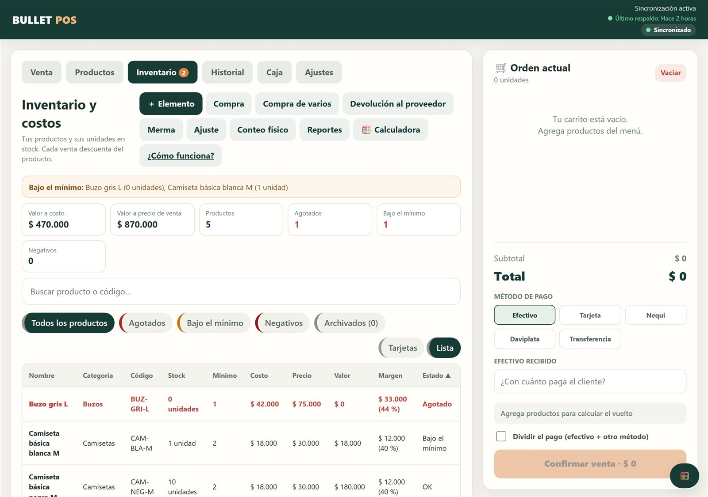
Compra de varios productos (una factura):
- Pulsa Compra de varios en Inventario.
- Escribe el proveedor y el número de factura.
- En cada línea, el producto (por nombre o código de barras), la cantidad y el costo por unidad. ＋ Agregar línea agrega otra. Si el producto se compra por caja («Se compra por caja de N»), la app convierte las cajas a unidades.
- Revisa el total y confirma. Cada línea sube el stock y actualiza el costo promedio.
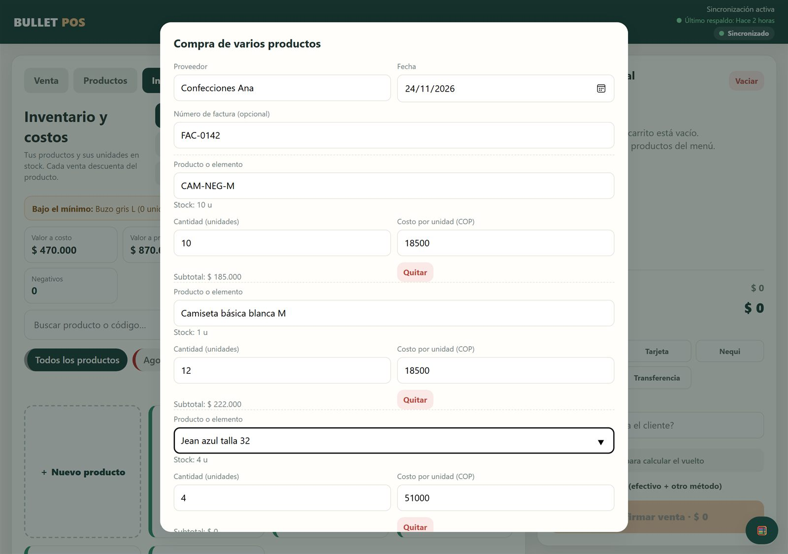
Devolución al proveedor: el botón Devolución al proveedor funciona igual que la compra, pero resta stock. Úsala cuando devuelves mercancía dañada o que no pediste. No es una merma: la plata vuelve.
Informes para tiendas (en Reportes, exportables a Excel): más vendidos por producto, sin movimiento en el periodo (lo que no rota), ganancia por categoría, compras por proveedor y devoluciones al proveedor, además de los de siempre.
14 Ajustes
Solo en el PC Main, en 5 secciones con resumen.
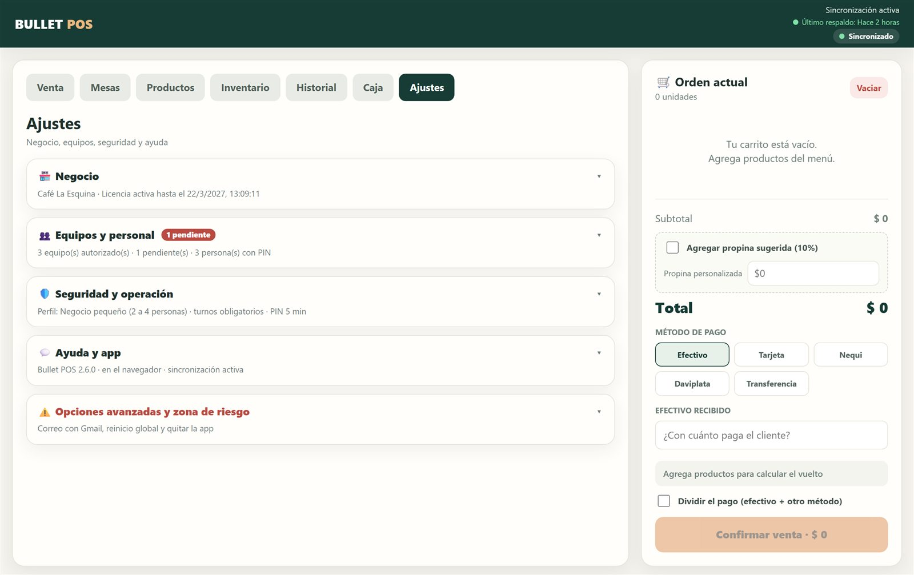
🏪 Negocio
Los datos del comprobante (nombre, NIT, dirección, teléfono), la licencia y el negocio al que está activado el equipo, con el link para otro equipo.
🧩 Tipo de negocio y módulos
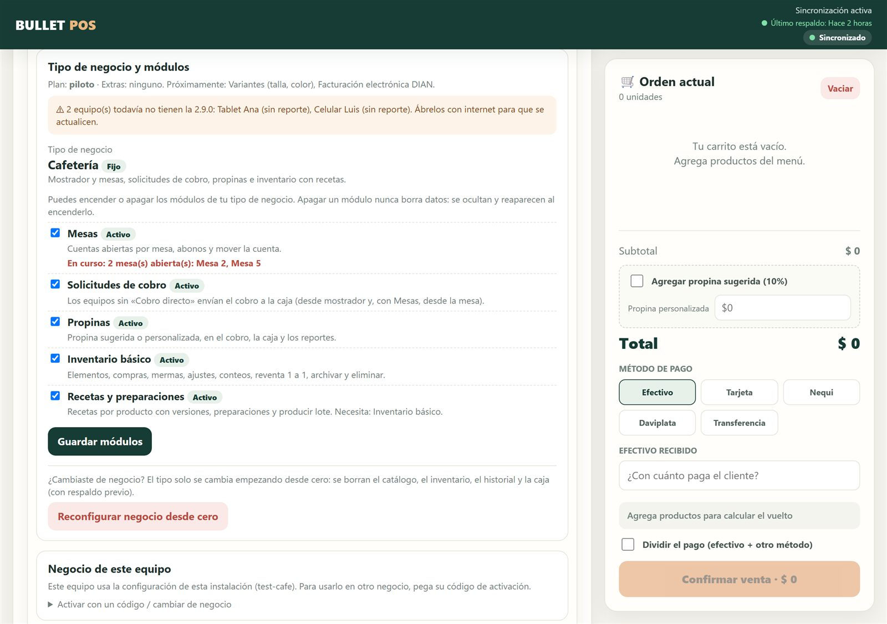
En Negocio, debajo de la licencia. Bullet POS tiene un núcleo que siempre funciona (venta, caja, turnos, productos, reportes, respaldos, equipos y licencia) y cinco módulos: Mesas, Solicitudes de cobro, Propinas, Inventario básico y Recetas y preparaciones (necesita Inventario).
Cada negocio funciona con un solo tipo de negocio (desde la 2.9.4). Se elige en el asistente al configurar el primer PC Main y queda fijo. Los negocios que ya existían quedaron con el tipo que tenían (sin tipo guardado: Cafetería).
| Tipo | Mesas | Solicitudes de cobro | Propinas | Inventario | Recetas |
|---|---|---|---|---|---|
| Cafetería · Restaurante · Otro | ✅ | ✅ | ✅ | ✅ | ✅ |
| Bar | ✅ | ⚪ | ✅ | ✅ | ✅ |
| Tienda de ropa / retail · Minimercado | — | ⚪ | — | ✅ | — |
✅ viene encendido (se puede apagar) · ⚪ viene apagado (se puede encender) · — no pertenece a ese tipo.
- Encender o apagar módulos de tu tipo: marca o desmarca y pulsa Guardar módulos (pide la contraseña y queda en la auditoría). Nada se borra: lo apagado se oculta en todos los equipos, sin reiniciarlos, y reaparece al encenderlo.
- Lo que está en curso se termina primero: no se puede apagar Mesas con mesas abiertas ni Solicitudes de cobro con solicitudes pendientes.
- Equipos sin «Cobro directo»: si apagas Solicitudes de cobro, esos equipos no pueden cobrar; la app lo advierte.
- Tu plan (equipos y PC Main) y sus extras aparecen arriba. Los extras «Variantes» y «Facturación electrónica DIAN» llegarán más adelante. La licencia ya no limita los módulos de tu tipo.
- Versión de los equipos: la tarjeta avisa qué equipos todavía no tienen la 2.9.0, o dice «Todos los equipos tienen la 2.9.0 o superior».
- Textos según tu negocio: sin Mesas, la app dice «vendedor» en lugar de «mesero»; sin Propinas, se ocultan las propinas en cero. Lo que tiene valor siempre se muestra.
🔄 Reconfigurar el negocio desde cero
Para cambiar de tipo (por ejemplo, de Tienda a Bar) hay que empezar desde cero. Lo hace solo el Main principal, con el botón Reconfigurar negocio desde cero de esta tarjeta.
- Si hay caja abierta, turnos o mesas abiertas, solicitudes pendientes u operaciones sin sincronizar, la app lo dice: resuélvelo primero.
- Elige el nuevo tipo y sus módulos.
- Deja marcado «Conservar equipos autorizados y usuarios con su PIN» (recomendado). Si lo desmarcas, los equipos (menos los PC Main) tendrán que pedir acceso otra vez y se borra el personal, menos la persona «Dueño».
- Pulsa Descargar respaldo completo (JSON), guárdalo y marca «Ya guardé el respaldo».
- Escribe la contraseña administrativa y RECONFIGURAR.
👥 Equipos y personal

- Dispositivos: Autorizar, Cobro directo, Revocar (con plazo o con borrado), Reportar perdido, Eliminar y la supervisión de sincronización. Al eliminar un equipo que tiene turnos abiertos, la app lo advierte y los cierra administrativamente. En cada equipo se ve de quién es el turno abierto.
- Personal y PIN: las personas de administración que entran a los PC Main: agregar, restablecer PIN, desactivar y eliminar. Persona «Dueño» (2.9.3): el Main principal marca su persona con Es el dueño; el segundo PC Main no puede cambiar su PIN, desactivarla ni eliminarla. Los equipos de los meseros no usan PIN; si quedan registros de meseros de antes, se borran con Borrar registros de meseros.
- Administración principal: cambiar la contraseña y administrar el segundo PC Main.
🔑 Permisos del segundo PC Main

El primer PC Main es el Main principal (dueño). Desde él se decide qué puede hacer el segundo, para que uno sea del dueño y el otro de un administrador. Abre Permisos de «…», marca o desmarca y pulsa Guardar permisos (pide la contraseña).
- Administrador (recomendado): todo lo del día a día, sin Equipos, Negocio y seguridad, Zona de riesgo.
- Solo operación: caja y turnos. Todo permitido: como antes.
- Vender, cobrar, mesas y ver el historial siempre están permitidos.
- El cambio llega al instante y funciona también sin internet. En el segundo Main aparece arriba de Ajustes lo que no puede hacer; si toca un botón restringido, la app le avisa y no hace nada.
- Mientras no guardes permisos, el segundo Main puede todo, menos actuar sobre el Main principal: nunca puede revocarlo, reportarlo perdido, eliminarlo ni quitarle los permisos de Main (desde la 2.9.2).
🛡️ Seguridad y operación

| Negocio pequeño (2 a 4 personas) | Negocio con meseros | |
|---|---|---|
| Quién cobra | Todos los equipos | El PC Main (los meseros envían solicitudes) |
| Turnos | Opcionales, sin aprobación | Obligatorios y aprobados por el PC Main |
| Entrega a caja | Automática | Separada |
| Sin conexión | 3 días en secundarios / 7 en el Main | 8 h / 24 h |
| PIN | Solo en los PC Main. Los equipos de los meseros no usan PIN. | |
| Bloqueo del PC Main | 5 min | 2 min |
💬 Ayuda y app

- Reportar un problema: el diagnóstico se envía por WhatsApp o correo, sin ventas ni datos de clientes.
- Escribir a soporte y Asistente de configuración.
- Instalar como app, y el estado de la sincronización con Reparar sincronización.
⚠️ Opciones avanzadas y zona de riesgo
- Correo con Gmail (opcional).
- Reinicio global de historial: borra ventas, cajas y turnos en todos los equipos. Pide escribir REINICIAR y la contraseña, y permite cerrar turnos abiertos de equipos apagados. No se puede deshacer: haz un respaldo antes.
- Quitar Bullet POS de este equipo: borra lo que la app guardó en el equipo antes de desinstalarla.
15 Sin internet, bloqueos y equipos que dejan de funcionar
Qué pasa cuando se va el internet, por qué se bloquea un equipo, por cuánto tiempo y qué hacer si uno se apaga, se daña o se pierde.
Trabajar sin internet
- La app sigue vendiendo sin internet. Las ventas se guardan en el equipo y se envían solas al volver la conexión, sin perderse ni duplicarse.
- Las mesas compartidas y las solicitudes de cobro necesitan internet para verse en los otros equipos.
- El indicador de sincronización de arriba muestra cuántas operaciones faltan por enviar.
Tres bloqueos distintos
| Bloqueo | Cuándo pasa | Cómo se sale |
|---|---|---|
| Por inactividad (PIN, solo PC Main) | Nadie usa el PC Main durante unos minutos: 1, 2, 5 o 10, o nunca. Perfil pequeño: 5 min; con meseros: 2 min. | Escribiendo el PIN. No se pierde nada. |
| Plazo sin conexión vencido | El equipo lleva más del plazo elegido sin confirmar su autorización con internet. | Conectándolo a internet: se desbloquea solo en pocos minutos, o con Verificar ahora. |
| Bloqueado por el PC Main | El PC Main lo revocó, lo reportó perdido o lo eliminó de la lista. | Solo el PC Main, autorizándolo de nuevo. |
El plazo sin conexión
- Con internet, cada equipo confirma solo su autorización cada 5 a 30 minutos, y el plazo vuelve a empezar. Mientras haya internet, nunca vence.
- El plazo cuenta desde la última confirmación, no desde que se fue el internet.
- Se elige en Ajustes → Seguridad y operación, uno para los equipos secundarios y otro para el PC Main: 1, 2, 4, 8 o 12 horas, o 1, 2, 3, 7, 14 o 30 días.
- Perfiles: negocio pequeño, 3 días en secundarios y 7 días en el PC Main; con meseros, 8 horas y 24 horas.
- Antes de que se acabe, el equipo avisa.
- Cuando vence: no deja empezar ventas nuevas, abrir mesas ni agregar productos. Sí deja terminar lo empezado (cobrar una mesa abierta, abonos), ver el historial y sacar respaldos. Lo vendido queda guardado y se envía al volver internet.
- Atrasar la hora del equipo no alarga el plazo, y queda en la auditoría.
Cuando un equipo deja de funcionar
Se apagó, se quedó sin batería, se dañó o se perdió:
- El PC Main lo ve «Desconectado» en la supervisión de Ajustes → Equipos y personal, si pasan 3 minutos sin noticias. Muestra su último reporte y cuántas ventas tenía sin enviar en ese momento.
- Sus ventas sin enviar quedan en ese equipo. Llegan cuando vuelva a conectarse. Si no vuelve nunca, esas ventas se pierden; las que ya se habían enviado están a salvo.
- Su turno queda abierto. Ciérralo con Cerrar turno administrativamente (Caja → Turnos, o desde el reinicio global). Si el equipo vuelve y envía ventas, llegan como ventas tardías para revisarlas.
- Según el caso:
- Se perdió o lo robaron: Reportar perdido. Se bloquea apenas tenga internet, borra los datos del negocio si lo pides y ofrece cerrar sus turnos. Si le quedaban ventas sin enviar, las conserva bloqueadas: no se borra lo que no llegó.
- Se dañó o se reemplaza: Revocar, con motivo. Puedes darle 24 horas para enviar lo pendiente (recomendado) y pedir que borre sus datos cuando ya no le quede nada por enviar.
- No volverá a usarse: después de revocarlo, Eliminar lo quita de la lista y cierra sus turnos abiertos. Si ese equipo vuelve a abrir la app, se bloquea y aparece como solicitud nueva.
16 Buenas prácticas de seguridad
- No compartas el PIN del PC Main: protege la caja, las anulaciones y los ajustes.
- La contraseña administrativa solo la conoce el dueño.
- Administradores: usen un PIN de 6 dígitos.
- Si un equipo se pierde, repórtalo de inmediato en Dispositivos.
- Haz un respaldo JSON cada semana y guárdalo fuera del equipo.
- Cierra la caja todos los días y revisa las diferencias.
- Antes de desinstalar, usa «Quitar Bullet POS de este equipo».
- No compartas el link de activación en grupos ni redes.
17 Preguntas frecuentes
«Este equipo aún no está autorizado»
El equipo muestra un código de 8 letras. En el PC Main, Ajustes → Dispositivos, escribe ese código en «Agregar un dispositivo nuevo» y autorízalo. El equipo debe tener internet. Si la solicitud tiene más de 48 horas, se borra sola: vuelve a abrir la app en el equipo para pedir acceso otra vez.
No me deja vender
Revisa que haya caja abierta, que tengas turno (si es obligatorio) y que la licencia esté vigente. El mensaje en pantalla dice qué falta.
Desaparecieron las mesas, las propinas o las recetas
El PC Main apagó ese módulo o tu plan no lo incluye. Mira Ajustes → Negocio → «Tipo de negocio y módulos». Los datos no se borraron: al encender el módulo vuelven a aparecer.
«Este equipo no cobra directamente y las solicitudes de cobro están apagadas»
El equipo no tiene «Cobro directo» y el módulo Solicitudes de cobro está apagado. En el PC Main: dale «Cobro directo» en Ajustes → Equipos y personal, o enciende Solicitudes de cobro.
Olvidé mi PIN del PC Main
En la pantalla de bloqueo toca «Olvidé mi PIN», escribe la contraseña administrativa y crea un PIN nuevo. Si olvidaste también la contraseña, contacta a soporte.
Olvidé la contraseña administrativa
Contacta a soporte.
Pedí turno y no pasa nada
El PC Main debe aprobarlo (le aparece un aviso arriba). Ambos equipos necesitan internet.
Un equipo se apagó con el turno abierto
En el PC Main: Caja → Turnos → «Cerrar turno» (cierre administrativo), con motivo.
«N ventas llegaron después de un cierre»
Revísalas en Caja → Turnos → «Por revisar» y márcalas como revisadas.
El lector de código de barras no agrega
Que no haya un campo con el cursor activo, que el producto tenga ese código y que el lector esté en modo teclado con Enter al final.
Diferencia en el cierre de caja
Revisa los movimientos de caja, las entregas pendientes y las ventas tardías, y escribe la observación.
«Sin licencia» o «Licencia vencida»
Contacta a soporte para renovarla. Tus datos no se pierden.
Sincronización con errores
Toca el indicador → «Revisar / reintentar». En el PC Main: Ajustes → Ayuda y app → «Reparar sincronización». Si sigue, «Reportar un problema».
Aparece «Equipo eliminado (…)» con un turno abierto
Es un turno que quedó abierto de un equipo que ya se eliminó. Ciérralo con «Cerrar turno administrativamente» desde Caja → Turnos o desde el reinicio global.
«Este PC Main no tiene permiso para…»
Es el segundo PC Main y el Main principal no le habilitó esa función. El dueño la habilita en Ajustes → Equipos y personal → Permisos.
Cambié de celular
Instala la app en el nuevo con el link de activación y pide que lo autoricen. Al viejo, revócalo o usa «Quitar Bullet POS de este equipo».
18 Glosario
| PC Main | Equipo principal que administra el negocio (hasta 2). |
| Main principal | El primer PC Main (del dueño): decide los permisos del segundo. |
| Equipo secundario | Celular o tablet del personal. |
| PIN | Número de 4 a 6 dígitos para entrar al PC Main (solo administración). |
| Contraseña administrativa | Clave del negocio para las acciones delicadas. |
| Turno | Periodo de trabajo de una persona en un equipo. |
| Base | Efectivo con que se abre la caja. |
| Corte X | Estado de la caja sin cerrarla. |
| Reporte Z | Cierre de caja impreso. |
| Arqueo | Conteo del efectivo para compararlo con lo esperado. |
| Cobro directo | Permiso de un equipo para cobrar sin pasar por el PC Main. |
| Solicitud de cobro | Pedido de un mesero para que el PC Main cobre. |
| Entrega a caja | Dinero que el mesero entrega y el PC Main confirma. |
| Link de activación | Enlace que conecta un equipo a su negocio. |
| Respaldo JSON | Archivo con la copia completa del negocio. |
| Auditoría | Registro de lo que se hizo, quién y cuándo. No se puede borrar. |